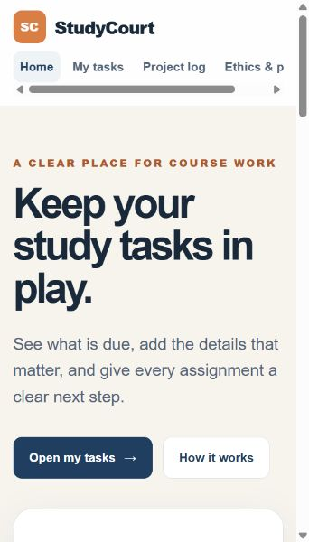
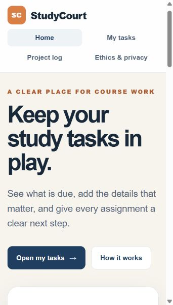

A practical plan for building and checking this study planner.
Planning
A three-week sprint
I used short cycles of planning, building and checking so I could change the design after testing a feature. This applies the Agile idea of responding to working software and feedback rather than treating the first plan as final.
Three-week development plan
Phase
Week 1
Week 2
Week 3
Planning
Define pages, users and required task fields.
Review priorities after first prototype.
Check final requirements and release list.
Analysis
Map create, edit, delete and login flows.
Study validation and storage edge cases.
Review privacy limits and feedback.
Design
Sketch navigation and form layout.
Refine mobile layout and error messages.
Polish visual consistency.
Implementation
Build HTML structure and CSS tokens.
Add task logic and local storage.
Integrate documentation and screenshots.
Testing & maintenance
Check links and page structure.
Test CRUD and invalid input.
Retest full flow, fix defects and package.
This table describes the development approach. Actual dates and work completed should be recorded from the developer’s own history.
Troubleshooting
Issue log
These two interface issues were observed and fixed while testing the application on a narrow browser viewport on 12 November 2026.
01
Mobile navigation was clipped
Found
12 Nov 2026, 20:33
Resolved
12 Nov 2026, 20:34
Cause
The mobile menu used a single non-wrapping flex row. The last link was only partly visible and required horizontal scrolling.
Fix
A two-column grid makes all four links visible. I checked the layout again at the same narrow width.

Before: the last link was clipped.
Code causing the issue:
.site-header nav { overflow: auto; flex-wrap: nowrap; }
.site-header nav a { white-space: nowrap; }

After: all four links are visible.
Corrected code:
@media (max-width: 650px) {
.site-header nav { display: grid; grid-template-columns: repeat(2, minmax(0, 1fr)); overflow: visible; }
.site-header nav a { white-space: normal; }
}